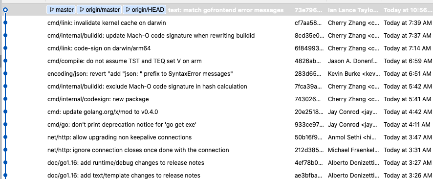

列举一些 Go1.16 中可能对大家有影响的变化
大家好，我是站长 polarisxu。
先说一下我一般怎么了解 Go 最新的一些动态。
01 从哪获取信息
主要通过以下方式：
-
逛推特，通过搜索功能，浏览 Go 信息，比如搜索：
#golang since:2020-12-01 until:2020-12-02 -
看 Go 仓库的提交记录；

-
查看 https://tip.golang.org。这个一般在一个版本开发了一段时间看，比如现在可以看 Go1.16 的一些内容，主要可以看还未完成的 Release Notes：https://tip.golang.org/doc/go1.16。其实这个文件是 Go 代码仓库中的 doc/go1.16.html；
此外，Reddit 的 r/golang 频道也会有很多信息。
02 Go 1.16 的一些改动
按计划，Go1.16 会在 2021 年 2 月份发布。目前 Release Notes 中已经有部分内容了。
Module 模式会默认开启
经过了这么多版本，终于默认开启了。默认开启是什么意思？即 GO111MODULE 环境变量的默认值将从 auto 改变为 on。这将解决一些目前使用 go 命令时的尴尬 。比如有些人可能说，明明我设置了 GOPROXY，但是 go get 依然没有经过它，下载依然失败。这是因为在非 modules 感知目录下运行 go get 时，自动选择了 GOPATH 模式而忽略了 GOPROXY 环境变量。如果你现在遇到这种情况，请手动将 GO111MODULE 环境变量更改为 on。
内嵌静态资源
支持内嵌静态资源（文件或者文件夹）至生成的二进制文件中。这部分之前写文章介绍过，见这里 。
支持最新版本 Mac
最新版 Mac 使用了 ARM 架构，因此 Go 1.16 增加 GOOS=darwin, GOARCH=arm64 支持，而这之前是用于 iOS 的，以后 iOS port 改为 GOOS=ios, GOARCH=arm64。
Linux 系统下 RSS 会更准确
在 Linux 上，runtime 现在默认会迅速地（使用 MADV_DONTNEED）向操作系统释放内存，而不是在操作系统面临内存压力时（使用 MADV_FREE）惰性地释放内存。
这意味着像 RSS 这样的进程级内存统计信息将更准确地反映 Go 进程所使用的物理内存数量。因此 Go1.16 中，不再需要配置 GODEBUG=madvdontneed=1 来改善内存监控行为。
切片扩容策略改变
如果一个 append(x, values…) 调用需要扩容，则基础切片 x 的容量将决定结果切片的容量（而不是原来的基础切片 x 的长度决定结果切片的容量）。
借用公众号 Go101 中的例子：
package main
func main() {
const N = 1024
var a [N]int
x := append(a[:N-1:N], 0, 9)
y := append(a[:N:N], 9)
println(cap(x), cap(y))
}
Go 1.15 将输出 2048 1280，但是使用 Go 1.16 将输出 1280 1280。
标准库
1）增加了 io/fs、embed 等库。
2）template 允许跨行。例如：
{{"hello" |
printf}}
3）strconv.ParseFloat 性能提升 2 倍。原因是它改为使用 Eisel-Lemire 算法 。这也会加速解码诸如 encoding/json 这样的文本格式。
简化的结构体字段标签写法
在进行 Web 开发时，Model 类可能会有好几种标签，写起来很繁琐，因此还出现了不少这样辅助写标签的工具。Go 1.16 开始，结构体字段的标签中的值相同的键值对可以合并写成一个，方便很多，比如：
type User struct {
UserName string `json bson gorm:"user_name,omitempty"`
}
知晓 init 函数的执行时间和内存消耗
关于该函数，大家都建议尽量别用，至少不能依赖它。同时不应该在其中处理耗时的事情。但之前没有很好地方法检测。Go 1.16 为 GODEBUG 环境变量增加了 inittrace=1 选项，可以输出 init 函数的执行时间和内存消耗。
再次借用 Go101 的例子 。
对于下面的程序：
package main
func init() {
println("hello")
}
func main() {
println("bye")
}
使用下面的命令运行（Linux 系统，Go tip rev:7f688d18c0）:
$ GODEBUG=inittrace=1 go run main.go
的输出为：
init internal/bytealg @0.018 ms, 0 ms clock, 0 bytes, 0 allocs
init runtime @0.15 ms, 0.56 ms clock, 0 bytes, 0 allocs
init errors @1.7 ms, 0.010 ms clock, 0 bytes, 0 allocs
init sync @1.8 ms, 0.001 ms clock, 16 bytes, 1 allocs
init internal/oserror @1.8 ms, 0.001 ms clock, 80 bytes, 5 allocs
init syscall @1.9 ms, 0.010 ms clock, 944 bytes, 2 allocs
init time @1.9 ms, 0.014 ms clock, 400 bytes, 8 allocs
init context @2.0 ms, 0.002 ms clock, 128 bytes, 4 allocs
init math @2.0 ms, 0 ms clock, 0 bytes, 0 allocs
init strconv @2.1 ms, 0.006 ms clock, 32 bytes, 2 allocs
init unicode @2.1 ms, 0.086 ms clock, 23944 bytes, 27 allocs
...
init internal/bytealg @0 ms, 0 ms clock, 0 bytes, 0 allocs
init runtime @0.048 ms, 0.042 ms clock, 0 bytes, 0 allocs
hello
init main @0.21 ms, 0.004 ms clock, 0 bytes, 0 allocs
bye
可见此 GODEBUG 环境变量选项对于查找 init 函数中的瓶颈很有帮助。
相关 issue: https://github.com/golang/go/issues/41378。
03 总结
Go 1.16 相比 Go 1.15 改动多不少，更多内容等待明年 2 月份发布。
另外推荐 Go101 这本开源书，作者对 Go 的细节掌握的很深，而且他写了双语版，这里是中文版：https://github.com/golang101/golang101。